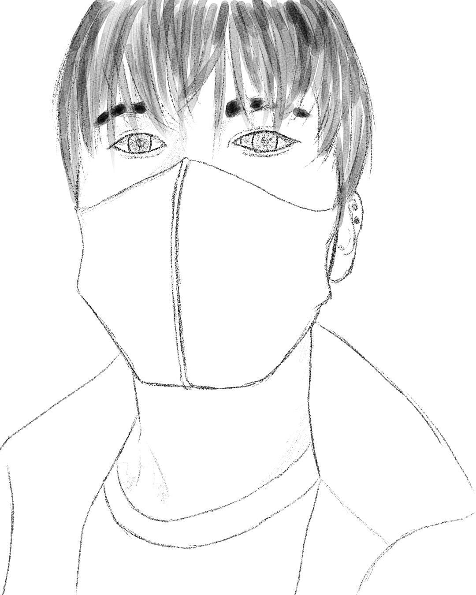

Jim

안녕하세요, 저는 장지훈이라고 합니다^^!
충북 제천시에서 태어났으며, 대구에서 대학을 졸업했습니다!
2015년 졸업하였고, 그 이후로는 서울에서 직장생활을 했습니다!
장지훈의 이모저모
1. MBTI는
ENFP
이며, 사람들 만나는 걸 좋아합니다.
2.
음주
를 좋아하며, 다수와 함께하는 자리도 좋지만, 혼술도 좋아합니다.
3. 취미는 여러 가지가 있지만, 특히 축구, 풋살과 같은 구기 종목을 좋아합니다.
4. 추가로 어릴 때는 육상 및 배구 선수로 12년간 생활했습니다!
5. 하지만 그래도 제일 좋아하는 운동은
축구
입니다^^!
©장지훈